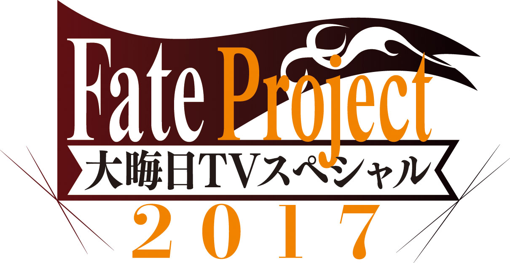

非常感謝您使用「Fate/Grand Order」。
在2017年12月31日(日)放送的「Fate Project 除夕 TV特別 2017」發表了「Fate/Grand Order」相關的新情報。
以下介紹一部份新情報。
◆關於「Fate/Grand Order 【第2部】 -Cosmos in the Lostbelt-」的開幕時期◆
在2017年12月26日(二)配信第2部序幕的「Fate/Grand Order 【第2部】 -Cosmos in the Lostbelt-」，預定2018年春左右開幕。
關於詳細會在日後再做公告。
◆「Fate/Grand Order 【第2部】 -Cosmos in the Lostbelt-」的宣傳影片公開◆
為「Fate/Grand Order 【第2部】 -Cosmos in the Lostbelt-」的本篇開幕做先驅，公開了宣傳影片。
在「Fate/Grand Order」官方網站內首頁及Gallery，公開了「Fate/Grand Order 【第2部】 -Cosmos in the Lostbelt-」的宣傳影片。
請務必觀看。
◆共通動作的Servant的戰鬥動作依序翻新◆
自「Fate/Grand Order」開服時登場的共通動作「全Servant」從2018年的數年依序翻新成専用動作。
關於對象Servant和翻新時期，會再做公告。
◆關於預定在2018年以後舉辦的一部份新活動的開放條件◆
今後，預定舉辦的新期間限定活動和期間限定宣傳活動中，預定會有將通過主線關卡第1部設為開放條件的情況。
務必藉此機會，通過主線關卡第1部來參加新活動！
今後也請多多指教「Fate/Grand Order」。